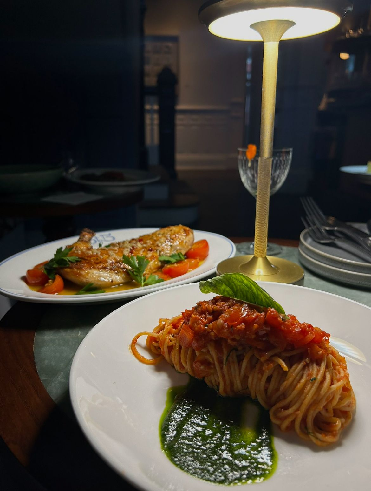
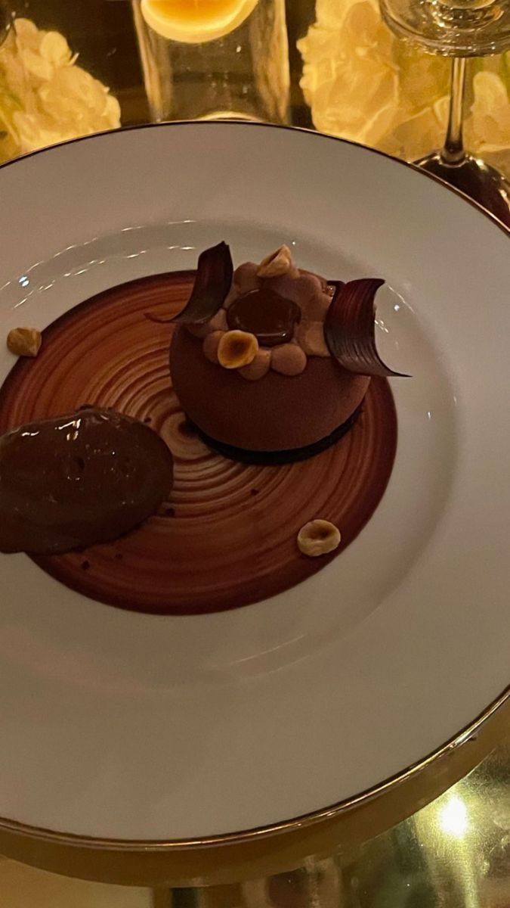
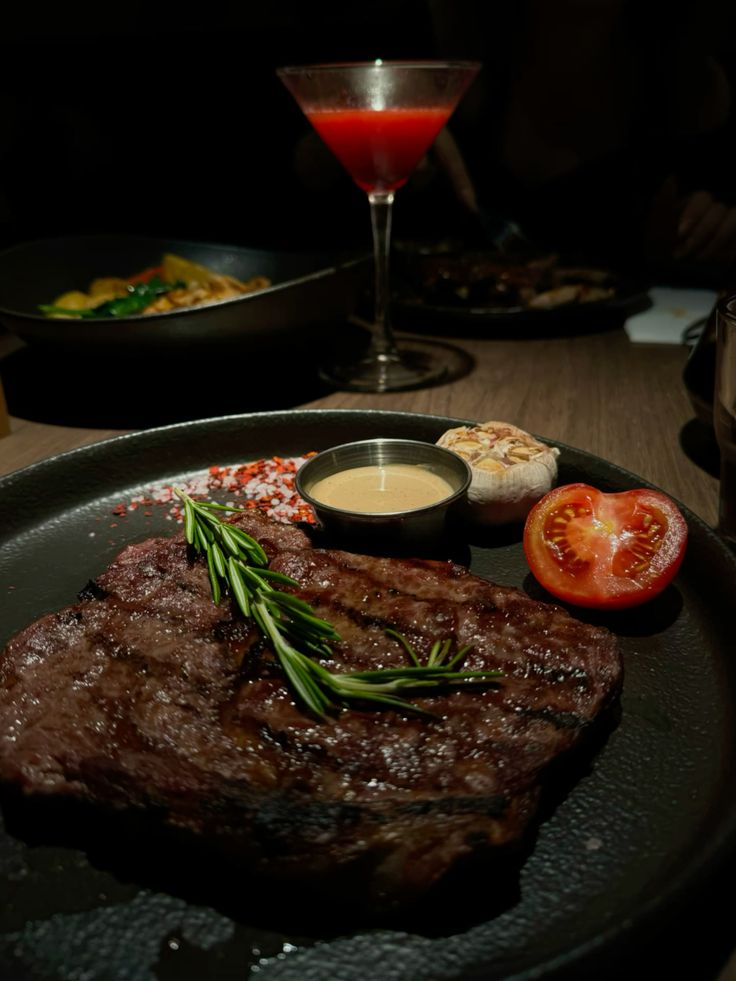
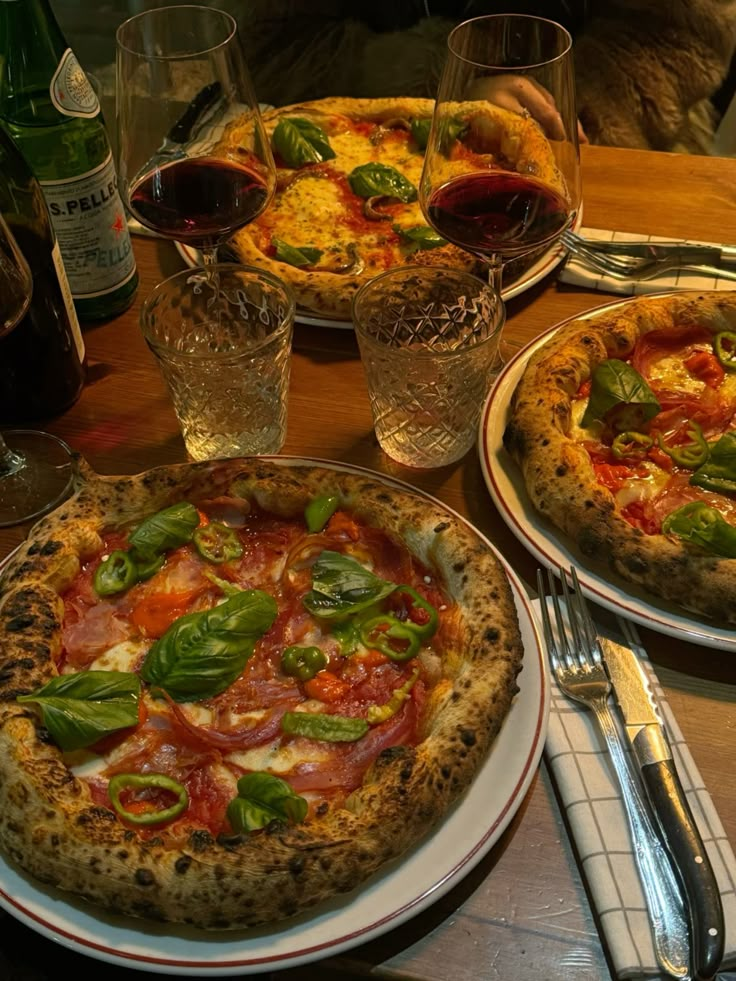

Настоящие эмоции. Настоящие вечера. Настоящая Италия.

“MariLi — это как отпуск в Тоскане. Атмосфера, вино и свет — всё идеально. Мы с мужем были очарованы!”
“Тепло, как дома. Мы приезжаем сюда каждый месяц. Спасибо MariLi за то, что сохраняете душу Италии.”

“От десертов невозможно оторваться. Вечер прошёл в полной гармонии — мягкий свет и вкус, который останется в сердце.”
“Кажется, что даже воздух здесь пахнет Италией. Музыка, огни и улыбки — я влюбилась в это место.”

“Идеальный сервис. Меня поразило внимание к деталям — от выбора вина до свечей на столе.”

“MariLi — это больше, чем ресторан. Это история, вкус и атмосфера, которую хочется переживать снова.”